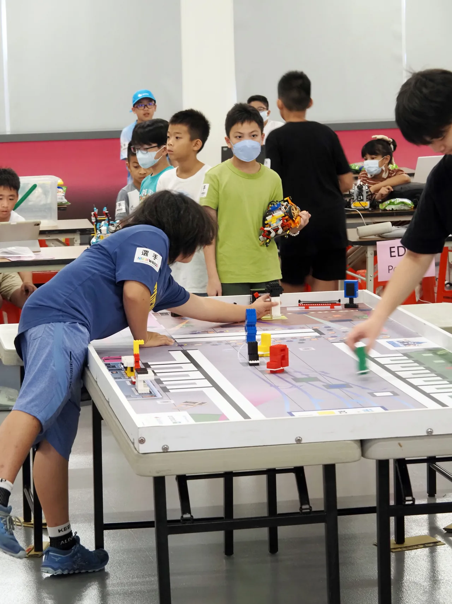

北區第二名、第四名
BUILD · CODE · CREATE
讓孩子的想像，
真的動起來。
從第一塊積木，到第一行程式。
找到適合孩子的起點，把「我想試試」變成「我做到了」。
樂高機器人 · Scratch · Python台北萬華｜國小一年級至高中三年級

FIND THEIR START
探索全部 5 門課程。
年級是選課起點，老師會依孩子的經驗與學習狀況協助確認班別。每期 12 堂，每堂 1.5 小時；實際開班時間與名額請洽教室。
A LITTLE LOOK INSIDE
學習的樣子，
直接看得到。
自己組裝、自己測試，再試一次。
老師用提問引導，讓孩子練習找出自己的答案。
把程式，變成真實的動作。
看看孩子如何讓機器人執行任務。
從玩遊戲，到創造遊戲。
角色、規則、關卡，都可以是自己的想法。
SMALL STEPS. REAL ACHIEVEMENTS.
每一份成果，
都從一次嘗試開始。
在課堂上練習解題，也把累積的能力
帶上競賽舞台。
澎湖貓咪盃優等 · 臺北市貓咪盃佳作
用程式思考，讓解題能力被看見。
